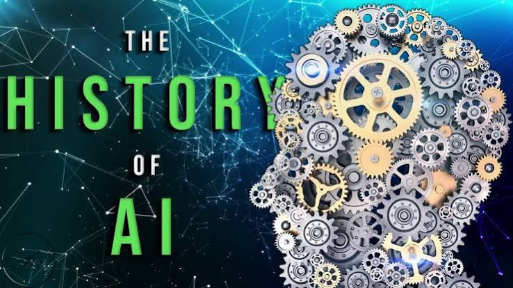

Early Ideas in AI

The history of Artificial Intelligence began with the idea that machines could be designed to imitate parts of human thinking. Early computer scientists studied logic, problem solving, and mathematical reasoning to understand whether computers could perform intelligent tasks.
As computers became more powerful, AI research expanded into areas such as expert systems, machine learning, natural language processing, and computer vision.
Modern AI Development
Modern AI grew quickly because computers became faster and more data became available. Instead of only following fixed rules, newer AI systems can learn patterns from examples and improve their results over time.
Today, AI systems are used in search engines, translation tools, recommendation systems, medical software, robotics, and cybersecurity tools.
Sources
IBM: History of Artificial IntelligenceBritannica: Artificial Intelligence